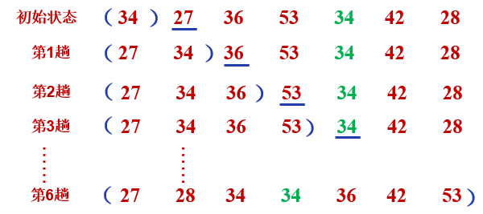
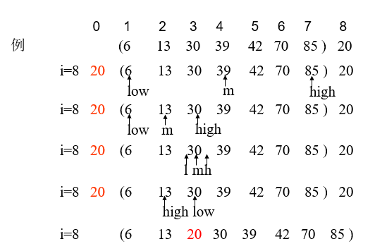
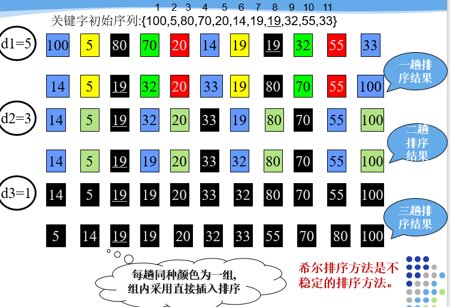

基础排序的一些方法
数据结构按照顺序表
typedef struct{
int key; //关键字项，关键字类型为整形
char *otherinfo; //其它数据项
}RedType; //记录类型
typedef struct{
RedType r[MAXSIZE+1]; //0号单元闲置
int length; //顺序表长度
}SqList; //顺序表类型直接插入排序
基本思想：每一趟将一个待排序的记录，按其关键字的大小插入到前面已经排好的子序列中的适当位置，直到全部待排序的记录插入完成为止
排序过程：
- 设待排序设待排序的记录
n个存放在顺序表中L中（L.r[1]...L.r[n]) - 先将序列中第1个记录看成是一个有序子序列
(L.r[i]) - 然后从第2个记录开始，逐个进行插入，直至整个序列有序。
- 整个排序过程需要
n-1趟
过程如下

void InsertSort(SqList &L) {
for(int i=2; i<=L.length; i++) { // 进行L.length-1趟排序
if(L.r[i].key<L.r[i-1].key) { // 将L.r[i]插入有序子表
L.r[0]=L.r[i];
int j; // 将待插入的记录暂存到监视哨中
for(j=i-1; L.r[0].key<L.r[j].key; j--) // 从后向前寻找插入位置
L.r[j+1]=L.r[j]; // 记录向后移动
L.r[j+1]=L.r[0]; // 插入到正确位置
}
}
}折半插入排序
基本思想：利用折半查找的方法在当前的有序区域查找位置，由此得到的插入排序算法为“折半插入排序”
若有序区中不存在和待插入记录相同的关键字，则折半查找过程的结束条件为low>high,此时插入位置为?
low(high+1)
若有序区中存在和待插入记录相同的关键字，当mid指示的记录关键字等于待插入记录的关键字时，此时，继续在后半区间进行查找，直到low>high，此时插入位置为low"(high+1)指示的位置
过程如下

//对顺序表L中的记录进行折半插入排序
void BInsertSort(SqList &L) {
for(int i=2;i<=L.length;i++){
L.r[0]=L.r[i]; // 将L.r[i]暂存到L.r[0]
int low=1,high=i-1;
while(low<=high){ // 在r[low..high]中折半查找插入位置
int m=(low+high)/2;
if(L.r[0].key<L.r[m].key)
high=m-1; // 插入点在低半区
else
low=m+1; // 插入点在高半区
}
for(int j=i-1;j>=high+1;--j)
L.r[j+1]=L.r[j]; // 记录后移
L.r[high+1]=L.r[0]; // 插入
}
}希尔排序
在直接插入排序中，当待排序纪录个数较少且待排序列的关键字基本有序时，排序效率较高。
希尔排序从“减少记录个数”和“序列基本有序”两个方面对直接插入排序进行改进。
基本思想：先取一个正整数dl<n作为一个增量，把所有相隔dl的记录放一组，组内进行直接插入排序；然后取d2<d1作为第二个增量，重复上述分组和排序操作；直至di=1，即所有记录放进一个组中排序为止
排序过程


//对顺序表L中的记录进行一趟增量为dk的希尔排序
void ShellInsert(SqList &L,int dk) {
//请补充该操作
for(int i=dk+1;i<=L.length;i++){
if(L.r[i].key<L.r[i-dk].key){ // 将L.r[i]插入有序子表
L.r[0]=L.r[i]; // 用L.r[0]暂存待插入记录L.r[i]
int j;
for(j=i-dk;j>0&&L.r[0].key<L.r[j].key;j-=dk)
L.r[j+dk]=L.r[j]; // 记录后移
L.r[j+dk]=L.r[0]; // 插入正确的位置
}
}
}
//对顺序表L中的记录按增量序列（存储在数组dt中）进行t趟希尔排序
void ShellSort(SqList &L,int dt[],int t) {
//请补充该操作
for(int k=0;k<t;k++)
ShellInsert(L,dt[k]);
// 一趟增量为dt[k]的希尔插入排序
}冒泡排序
基本思想：对待排序序列按照从前向后的顺序，依次比较相邻记录的关键字，若发现逆序则交换，使关键字较大的记录逐渐向后移动（从下标较小的单元移向下标较大的单元）。
排序过程：（假设记录保存在顺序表L中）
- 初始：
L.r[1..n]为无序区。 - 第一趟排序（无序区为
L.r[1..n]）- 从左到右扫描无序区，依次比较相邻两个记录关键字的值，若发现“前大后小”，则交换二者的位置。即依次比较
(L.r[1]，L.r [2])，(L.r[2]，L.r [3])，…，(L.r[n-1]，L.r [n])对于没对记录(L.r[j]，L.r [j+1])若L.r [j].key>L.r [j+1].key，则交换L.r [j]和L.r [j+1]的内容。 - 第一趟排序完毕时，最大的关键字就下沉到该区间的底部，即
L.r[n]的位置。 - 第二趟排序（无序区为
L.r [1..n-1]，有序区为L.r [n]) - 第
i趟排序 （无序区为L.r [1..n-1]，有序区为L.r [n]扫描L.r [1..n-1]，扫描完毕时，次大的关键字下沉到L.r [n-1]的位置 - 经过
n-1趟排序后，无序区为L.r [1]，有序区为L.r [2...n]排序完成 - 若第i趟排序过程中，没有进行任何记录交换，则表明
L.r [1..n-i+1]中的记录已经有序，因此不再需要进行下一趟的排序，即冒泡排序已经完成。即：排序结束的条件是(i=n-1)或者某趟的排序过程中没有进行记录交换。
- 从左到右扫描无序区，依次比较相邻两个记录关键字的值，若发现“前大后小”，则交换二者的位置。即依次比较
//对顺序表L中的记录进行冒泡排序
void BubbleSort(SqList &L) {
//请补充该操作
int flag=1,j;
for(int i=L.length-1;i>=1&&flag;i--){ // 控制排序趟数
flag=0; // 每趟排序开始时，将flag
for(j=1;j<=i;j++){ // 从前向后扫描本趟无序区[1...i+1]
if(L.r[j].key>L.r[j+1].key){ // 若相邻记录是逆序，交换之
flag=1; // 本趟排序中发生了交换，将flag置为1
RedType t=L.r[j];
L.r[j]=L.r[j+1];
L.r[j+1]=t;
}
}
}
}排序过程

快速排序
快速排序（Quick Sorting)是所有内部排序算法中速度最快的一种排序算法
基本思想：任取待排序序列中的某个记录作为枢轴（一般取第一个记录），通过一趟排序（一次划分），将待排序记录分为左右两个子序列，左子序列中记录的关键字均小于或等于枢轴记录的关键字，右子序列中记录的关键字均大于枢轴记录的关键字，然后分别对两个子序列进行快速排序，直至整个序列有序。
排序过程：对顺序表L中记录进行一趟快速排序，附设两个指针low和high，设枢轴记录关键字为pivotkey，初始时令low=1,high=L.length，pivotkey=L.r[1].key
- 首先从high所指位置向前搜索第一个关键字小于枢轴的记录，令
L.r[low]=L.r[high]，使关键字相对较小的记录交换到左子序列中。 - 再从
low所指位置起向后搜索，找第一个关键字大于枢轴的记录，令L.r[high]=L.r[row]，使关键字相对于较大的记录交换到右子序列中。
重复上述两步，直至low=high为止，此位置就是枢轴记录最终被存放的记录的位置。
在分别对两个子序列进行快速排序，直到每个子序列只含一个记录为止
排序过程